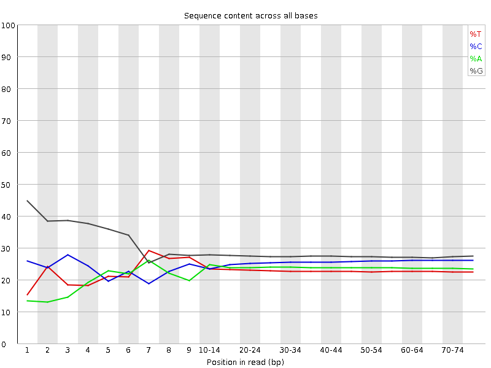
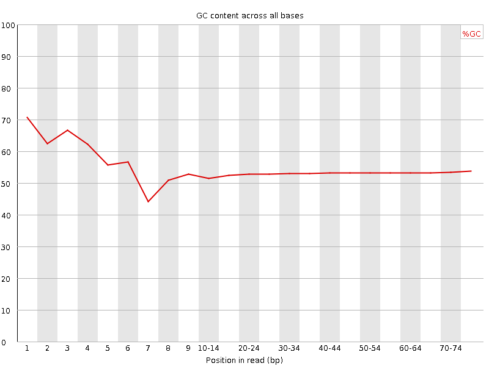
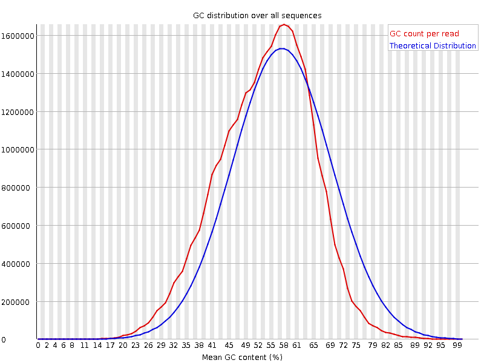
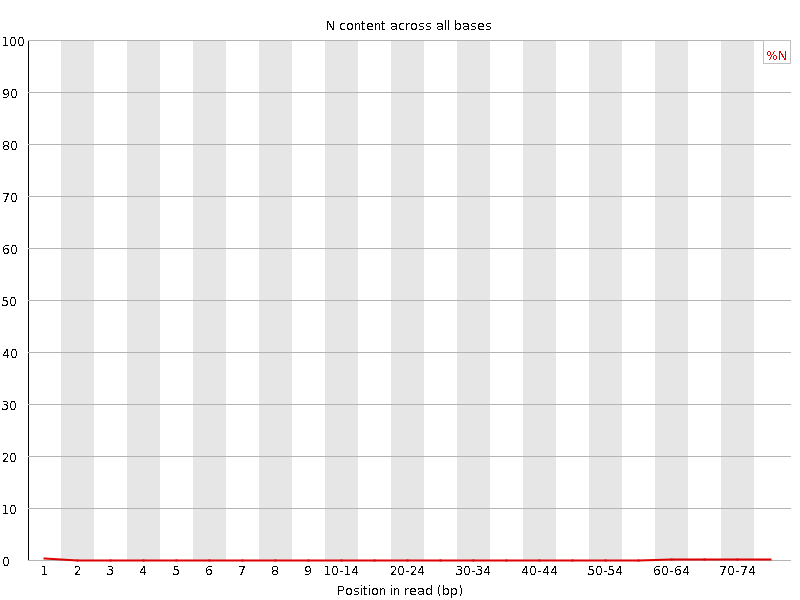
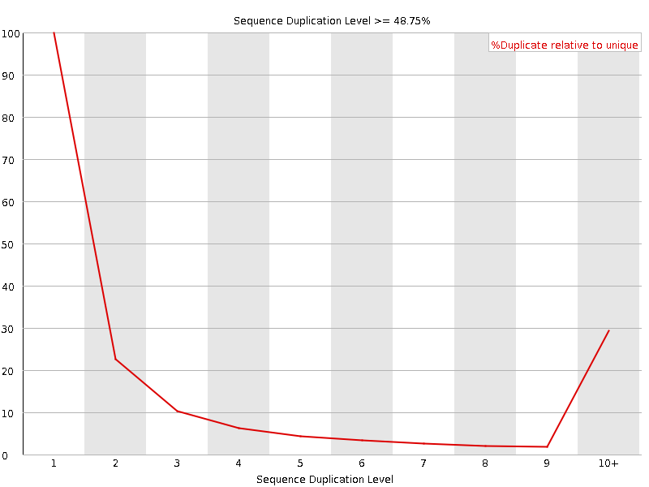
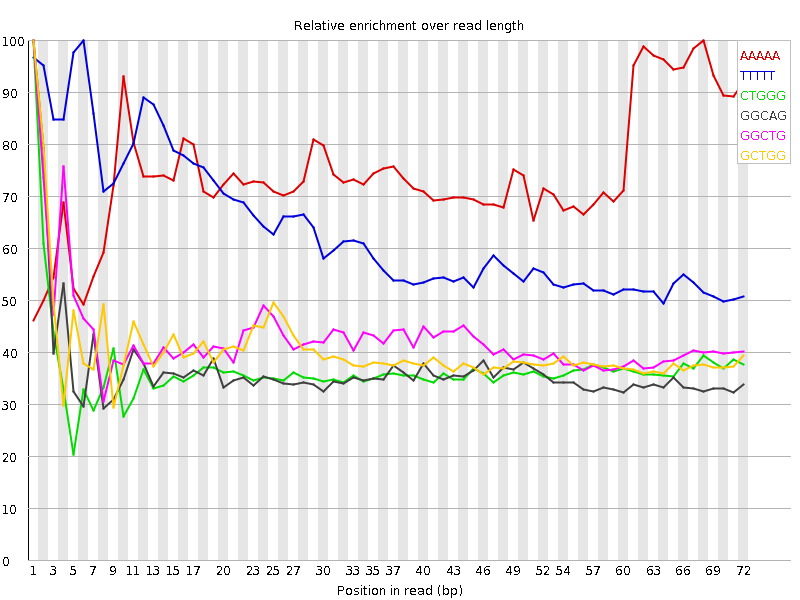

![[OK]](Icons/tick.png) Basic Statistics
Basic Statistics
| Measure | Value |
|---|---|
| Filename | SRR307915_1.fastq |
| File type | Conventional base calls |
| Encoding | Sanger / Illumina 1.9 |
| Total Sequences | 34183090 |
| Filtered Sequences | 0 |
| Sequence length | 76 |
| %GC | 53 |
Per base sequence quality

Per sequence quality scores

![[FAIL]](Icons/error.png) Per base sequence content
Per base sequence content

Per base GC content

![[WARN]](Icons/warning.png) Per sequence GC content
Per sequence GC content

Per base N content

Sequence Length Distribution

Sequence Duplication Levels

Overrepresented sequences
No overrepresented sequences
Kmer Content

| Sequence | Count | Obs/Exp Overall | Obs/Exp Max | Max Obs/Exp Position |
|---|---|---|---|---|
| AAAAA | 6223165 | 3.5841317 | 4.8169684 | 68 |
| TTTTT | 4815545 | 3.1417546 | 4.9288797 | 6 |
| CTGGG | 7305245 | 2.2543206 | 6.1376123 | 1 |
| GGCAG | 7417245 | 2.2325063 | 6.0829473 | 1 |
| GGCTG | 7228275 | 2.2305686 | 5.2105756 | 1 |
| GCTGG | 6893120 | 2.1271436 | 5.2445602 | 1 |
| GGGAG | 6610465 | 1.7828121 | 5.408447 | 1 |
| GGGCA | 5785150 | 1.7412643 | 5.011704 | 1 |
| TGGGG | 6132625 | 1.6957068 | 5.2347255 | 1 |
| GGGGG | 6546770 | 1.4605818 | 7.660931 | 1 |
| GGGGA | 5406850 | 1.4582026 | 7.084929 | 1 |
| GTGGG | 5188210 | 1.4345706 | 6.959433 | 1 |
| GGGGT | 4562125 | 1.2614545 | 5.9305425 | 3 |
| CGGGG | 3652185 | 0.9093438 | 5.957883 | 1 |